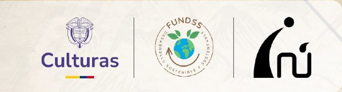

Sobre este mapa
Versión interactiva del mapa «Ruta de Inú y los espantos robledeños». Diseño del mapa original: David Saavedra.
Este mapa no implica validación de acceso a lugares ni habilitación de infraestructura.
Los textos cortos de cada parada son de apoyo y se editan en la lista PARADAS del código.